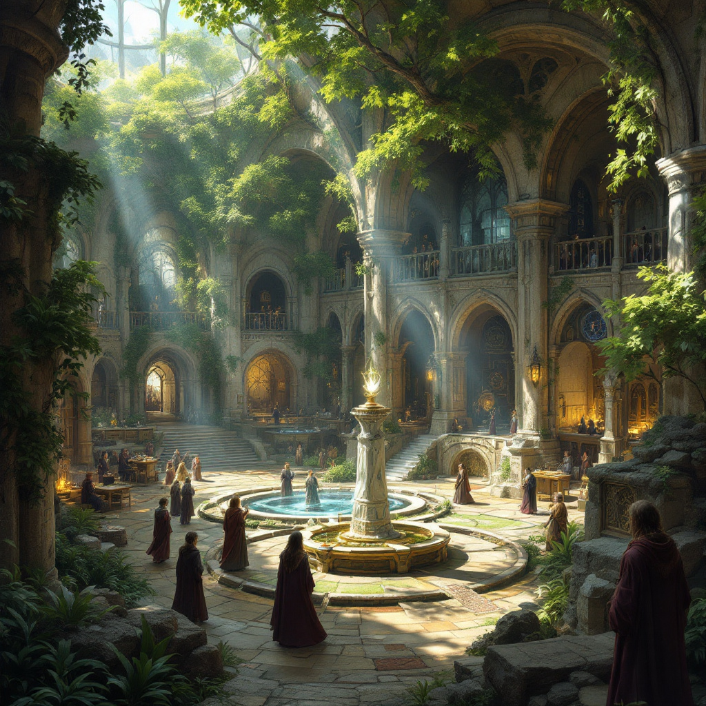
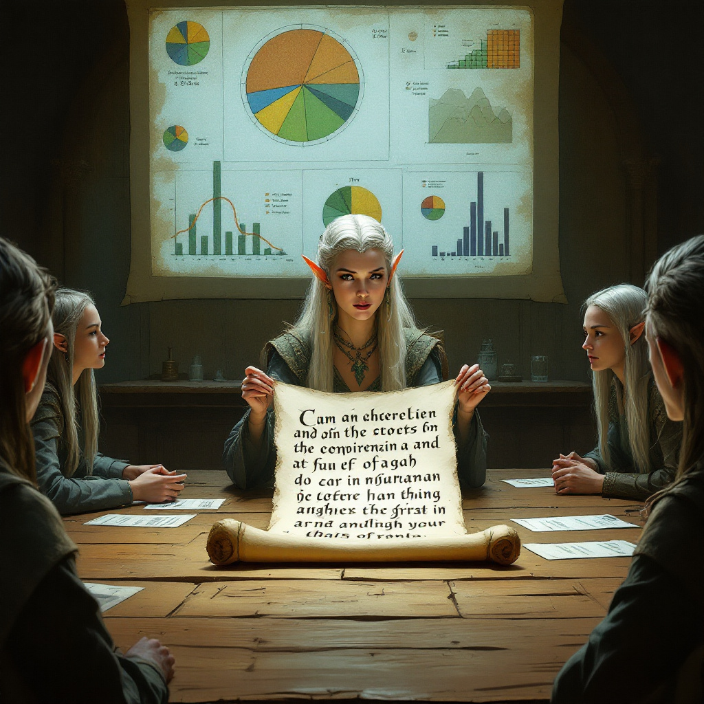

Adina Šefraná - Elfská vládkyně
O mně
Dokonce i ten nejmenší člověk může změnit běh budoucnosti.
Jsem Adina Šefraná, Paní Lothlórienu, zkušená vládkyně a strážkyně jednoho z Tří elfských prstenů,
s dlouholetou praxí v ochraně Středozemě před silami Temna.
Specializuji se na diplomatické vedení, diplomacii a prorocké vize, díky nimž pomáhám národům přečkat největší hrozby.
Mám hluboké znalosti v oblasti magie, telepatie a tvorby mocných artefaktů, což mi umožňuje poskytovat podporu a ochranu spojencům.
Ve své roli kombinuji moudrost získanou v Amanu s praktickými zkušenostmi z válek a politických jednání mezi elfy,
lidmi a dalšími národy.
Mé poslání je vést a chránit, předávat znalosti budoucím generacím a zajistit, aby Světlo nikdy nezhaslo.
Vzdělání

Univerzita Valinor Studium pod vedením Ainur a nejmoudřejších elfů
- Mistryně proroctví a vidění
- Umění telepatie a mentální komunikace
- Diplom z válečné strategie a vedení národů
Praktická výuka v Amanu Osobní žačka Meliany a Fëanora
- Tvorba magických artefaktů
- Historie a filozofie elfů
Schopnosti a Dovednosti
| Dovednost |
Nejvyšší stupeň |
| Telepatie a Proroctví |
Dokážu nahlédnout do myslí a vidět budoucnost |
| Magie a Ochrana |
Nositelka Prstenu Nenya, vytvářím ochranné bariéry |
| Diplomacie a Vedení |
Vládnu Lothlórienu a udržuji mír mezi národy |
| Bojové dovednosti |
Mistryně v používání meče a magie |
| Jazykové znalosti |
Plynule hovořím Quenya, Sindarštinou, Černou řečí i lidštinou |
Profesní zkušenosti

Vládkyně Lothlórienu (Druho-Čtvrtý věk)
- Ochrana lesa před Temným pánem Sauronem
- Vedení elfského národa ve Středozemi
- Poskytování útočiště Společenstvu Prstenu
Odpor proti Sauronovi v Prvním, Druhém a Třetím věku
- Aktivní boj proti Morgothovi a Sauronovi
- Poradenství vůdcům Středozemě při obraně proti Temnu
- Podpora Společenstva Prstenu a vedení Froda k jeho osudu
Portfolio projektů a doporučení
Gandalf Bílý, Istari, člen Bílé rady, nepřítel Temna:
Adina Šefraná je jednou z nejmoudřejších a nejmocnějších bytostí,
které jsem ve Středozemi poznal.
Její vhled do budoucnosti, schopnost vést a neochvějné odhodlání chránit svůj lid ji činí výjimečnou vládkyní a spojenkyní.
Ve všech dobách prokázala, že její rozhodnutí jsou vedená nejen rozumem, ale i soucitem.
Spolupráce s ní byla vždy inspirující a její rady jsou neocenitelné pro každého, kdo usiluje o zachování světla ve světě plném stínů.
Mohu ji doporučit s největší důvěrou každému, kdo hledá opravdového vůdce a ochránce dobra.
Gandalf Bílý, kontakt:📧 E-mail: gandalf@istari.maia
📞 Telefon: Nedostupný (preferuje komunikaci pomocí ohnivých signálů nebo poštovních holubů).


Elrond, Pán Roklinky:
Adina Šefraná je jedním z největších a nejmoudřejších elfů, které kdy svět poznal.
Po tisíciletí stála v čele svého lidu a chránila Středozem před Temnotou, ať už radou, silou, nebo vizí budoucnosti.
Její moudrost převyšuje většinu smrtelníků i nesmrtelných a její srdce je neochvějně oddané dobru.
Měl jsem tu čest s ní spolupracovat v mnoha rozhodujících chvílích dějin a mohu ji s plnou důvěrou doporučit každému,
kdo hledá pravého vůdce a spojence v boji za světlo.
Elrond, kontakt: 📧 E-mail: elrond@rivendell.el
📞 Telefon: Nedostupný (preferuje telepatickou komunikaci nebo posly na koních).